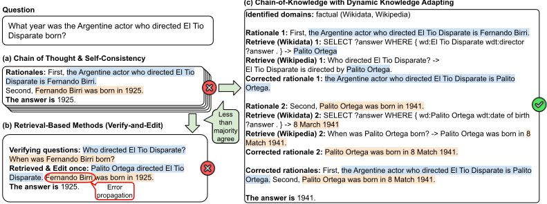
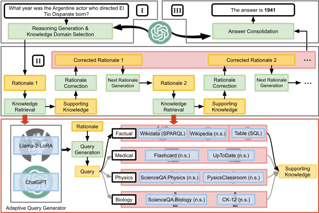
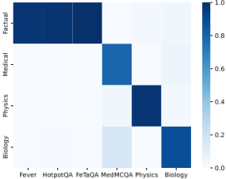
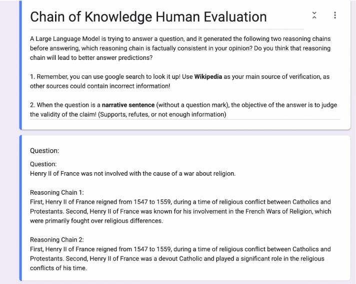
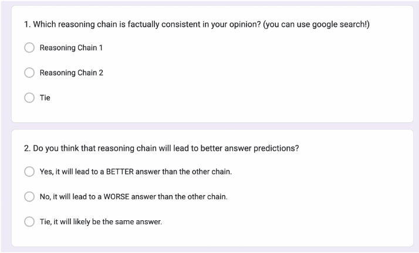

Chain-of-Knowledge：通过异构知识源上的动态知识适配实现大语言模型的事实接地
该论文针对 LLM 在知识密集型任务中的幻觉问题，指出已有检索增强方法的三个局限：对所有问题使用固定知识源、难以生成 SPARQL 等结构化查询、并行编辑导致 rationale 间错误传播。提出 Chain-of-Knowledge（CoK）三阶段框架：先用 few-shot CoT 与 self-consistency 筛出答案缺乏多数共识的不确定样本，并通过 in-context learning 选定知识域；再由自适应查询生成器（AQG）针对 Wikidata、表格、领域文档等异构源生成 SPARQL/SQL/自然语言查询，检索结果用于逐条修正 rationale，且用前序已修正内容生成后续步骤以阻断错误传播；最后基于修正后的 rationale 链整合答案。实验显示 CoK 平均超过 CoT 基线 4.3%，在 HotpotQA 上相对 CoT-SC 的提升（2.0%）高于 ReAct（0.8%），成本仅约 ReAct 的 40%。对团队的知识库问答与检索增强场景有直接参考价值。
LLM 在知识密集型任务上易自信地生成事实错误内容（幻觉）。现有检索增强方法（Verify-and-Edit、ReAct 等）存在三点不足：对所有问题使用固定知识源，难以取回领域专门知识；依赖主要在自然语言上预训练的 LLM，难以生成 SPARQL 等结构化查询；缺乏渐进式修正能力，rationale 之间的错误会传播。
三阶段框架：(1) 推理准备——用 few-shot CoT 生成初步 rationale 与答案，用 self-consistency 阈值筛选需外部知识的不确定样本，并通过 in-context learning 从 factual/medical/physics/biology 四个域中选择相关知识域；(2) 动态知识适配——自适应查询生成器（AQG）按知识源类型生成 SPARQL、SQL 或自然语言查询（通用查询与 SQL 用 ChatGPT，SPARQL 与领域查询用 LoRA 指令微调的 Llama-2-7B，训练时加入错误查询负例做对比式指令微调），执行查询（SPARQL 需先用 GENRE 做实体链接）后逐条修正 rationale，并用前序已修正 rationale 生成后续 rationale 以阻断错误传播；(3) 答案整合——基于修正后的 rationale 链生成最终答案。
CoK 在知识密集型任务上平均超过 CoT 基线 4.3%
事实域任务 3/6-shot 平均：HotpotQA 提升 2.6%、FEVER 提升 4.3%；MedMCQA 与 MMLU Physics/Biology 平均超过 CoT 基线 4.9%
相对 CoT-SC 的提升：HotpotQA 上 CoK 为 2.0%、ReAct 为 0.8%；FEVER 上 CoK 为 3.5%、ReAct 为 4.2%
动态（渐进式）知识适配相对 CoT 提升 4.2%，而并行编辑因错误传播表现更差
MedMCQA 上在 Medical 域外引入 Biology 域额外提升 1.3%；医疗域同时使用 Flashcard 与 UpToDate 比仅用 Flashcard 提升 2.1%
知识域选择在四个域上的 F1 均超过 94%
成本约为 ReAct 的 40%：HotpotQA 每实例 787 vs 1638 tokens，FEVER 329 vs 848 tokens
人工评估：错误预测中 44% 的 CoK 推理链事实一致性更好，其中 73% 被认为应带来更好答案；两名标注者 Cohen's Kappa 为 0.43
区别于 Verify-and-Edit/ReAct 等主要使用非结构化文本、对每条 rationale 并行独立检索编辑（或将历史错误留在上下文）的方法，CoK 同时引入 Wikidata、表格等结构化知识源；提出可按知识源类型生成 SPARQL/SQL/自然语言查询的 AQG，并可在微调模型与黑盒 LLM 之间切换；采用渐进式 rationale 修正（前序修正结果参与后续生成）阻断错误传播；同时用 self-consistency 阈值只对不确定样本触发检索编辑以控制成本。
相关度级别：high
命中能力域：3.1 上下文工程与记忆 | 3.2 提示工程 | 3.3 Agent 架构与工具使用 | 3.5 评测与可靠使用
理由：论文核心是异构知识源的检索增强与检索结果的上下文组织（3.1），AQG 生成并执行 SPARQL/SQL 查询属于工具/函数调用与 harness 编排范畴（3.3），CoT、self-consistency 门控与 ICL 域选择是可复用的提示工程模式（3.2），幻觉抑制、事实性自动评测（ProgramFC）+人工评估、以及逐 token 成本分析直接对应可靠使用与成本优化（3.5）。团队构建知识库问答等研发提效工具，如何让模型在多源异构数据上产出事实正确答案并控制调用成本，是直接命中的工程场景。
建议动作：深入精读并做内部分享
arXiv:2305.13269v4 [cs.CL] 2024年2月21日
Xingxuan Li 1,2 ∗† , Ruochen Zhao 2 ∗‡ , Yew Ken Chia 1,3 ∗† , Bosheng Ding 1,2 † , Shafiq Joty 2,4 Soujanya Poria 3 , Lidong Bing 1,5
1 阿里巴巴集团达摩院（DAMO Academy），新加坡，2 南洋理工大学，
3 新加坡科技设计大学，4 Salesforce 研究院，
5 湖畔实验室，中国杭州 310023
{ xingxuan.li, yewken.chia, bosheng.ding, l.bing } @alibaba-inc.com { ruochen002, srjoty } @ntu.edu.sg sporia@sutd.edu.sg
我们提出知识链（chain-of-knowledge，CoK），这是一种新颖的框架，通过动态引入来自异构来源的接地（grounding）信息来增强大型语言模型（LLM）。这使得生成的推理依据（rationale）更具事实性，并减少了生成过程中的幻觉。具体而言，CoK 由三个阶段组成：推理准备、动态知识适配和答案整合。给定一个知识密集型问题，CoK 首先准备若干初步的推理依据和答案，同时识别相关的知识领域。如果各采样答案之间未形成多数共识，CoK 便通过从所识别的知识领域适配知识来逐步修正推理依据。这些修正后的推理依据可以合理地充当最终答案整合的更佳基础。与主要使用非结构化数据的先前研究不同，CoK 还利用了诸如 Wikidata 和表格等结构化知识源，这些来源能够提供更可靠的事实信息。为了在动态知识适配阶段同时访问非结构化和结构化知识源，我们提出了一种自适应查询生成器（adaptive query generator），它能够针对多种类型的查询语言生成查询，包括 SPARQL、SQL 和自然语句。此外，为了最小化推理依据之间的误差传播，CoK 利用先前已修正的推理依据来渐进地生成并修正后续的推理依据。大量实验表明，CoK 在不同领域的知识密集型任务上都能持续提升 LLM 的性能。我们的代码已在 https://github.com/DAMO-NLP-SG/chain-of-knowledge 公开。
近年来，以 ChatGPT（OpenAI, 2023）为代表的大语言模型（Large Language Models, LLMs）展现出了令人瞩目的语言生成能力（Cheng et al., 2023; Ding et al., 2023; Chen et al., 2024）。然而，LLMs 面临的一个主要挑战在于幻觉（hallucination），即它们倾向于自信地生成看似合理但事实上错误的文本（Ji et al., 2023; Zhao et al., 2023b）。如图 1 所示，给定一个需要事实知识才能回答的问题——“执导 El Tio Disparate 的阿根廷演员出生于哪一年？”——最先进的 LLMs 也常常给出错误的答案。尽管 LLMs 具有从训练数据中回忆信息的卓越能力，但如何有效更新或控制这些模型内部的事实知识仍然充满挑战（Luo et al., 2023）。
∗ 同等贡献。
† Xingxuan Li、Yew Ken Chia 和 Bosheng Ding 就读于达摩院（DAMO Academy）与其各自大学联合培养的博士项目。
‡ Ruochen Zhao 属于 AISG 博士奖学金项目（AISG Ph.D. Fellowship Programme）。

解决生成中幻觉问题的一个有前景的方向是利用外部知识来增强 LLMs（Mialon et al., 2023）。这类方法将 LLMs 与检索系统相结合，旨在利用外部事实知识来引导生成过程。这些方法不再仅仅依赖 LLMs 的内部训练知识，而是能够从外部知识源（如网页文档（Shi et al., 2023）和知识库（Xie et al., 2022））中获取相关信息。此外，为了应对需要复杂推理的更复杂问题，Zhao et al. (2023c) 最近提出了一个 Verify-and-Edit（VE）框架，该框架通过引入检索系统来改进 LLMs 的思维链（chain-of-thought, CoT）推理（Wei et al., 2022）。
然而，这些方法存在三个固有的局限性。首先，它们对所有问题都使用固定的知识源，这可能无法检索到专业化和领域特定的知识。例如，对于医学问题，查询 Wikipedia 可能并不有效。其次，为了生成检索查询，现有方法主要依赖 LLM，而 LLM 主要在自然语言句子上进行预训练，因此在生成用于查询知识图谱的 SPARQL 等结构化查询时可能效果不佳。第三，现有的检索增强方法缺乏渐进式修正能力，从而导致潜在的误差传播。例如，在图 1 中，我们将每个推理依据定义为思维链（CoT）中的一个思考步骤（句子）。Verify-and-Edit 并行且独立地为每个推理依据检索知识。由于第二个推理依据依赖于第一个，误差可能从验证步骤延续到编辑步骤，使得检索到的知识彼此之间以及与实际问题不一致，从而导致错误的最终答案。类似地，ReAct (Yao et al., 2023) 也会在提示中保留先前（推理或行动）步骤的错误，从而给 LLM 推理带来潜在的噪声和偏差。
为了解决这些局限性，我们提出了知识链（chain-of-knowledge，CoK），这是一个利用异构知识源动态增强 LLM 的框架。图 1 展示了 CoK 工作方式的一个示例：对于问题“执导 El Tio Disparate 的阿根廷演员出生于哪一年？”，首先利用结合自一致性的 CoT (Wei et al., 2022) 来生成初步推理依据、定位相关的知识领域，并选出缺乏多数共识的答案以作进一步处理。在随后的动态知识适配阶段，采用自适应查询生成器（adaptive query generator，AQG）为所选领域内的知识源生成查询。为了有效检索异构格式的知识，AQG 能够自适应地生成相应类型的查询，例如 SPARQL 和自然语句（见图 2）。随后，通过执行生成的查询获得支持性知识，并利用其编辑第一个推理依据（即将导演从 Fernando Birri 修正为 Palito Ortega）；这确保了错误不会传播到后续第二个推理依据的生成中。接着以同样的过程编辑第二个推理依据。最后，CoK 基于修正后的推理依据链得出最终答案。
2

鉴于不同的知识源需要不同的查询语言，AQG 在生成查询方面扮演着至关重要的角色。AQG 具有很强的通用性，既可以是像 Llama-2 (Touvron et al., 2023) 这样使用 LoRA (Hu et al., 2021) 微调的模型，也可以是像 ChatGPT 这样的现成 LLM。通过同时利用非结构化和结构化知识源，CoK 能够实现更高的事实准确性、更强的可靠性以及更便捷的信息更新。
总而言之，我们的主要贡献如下：（1）我们提出了知识链（chain-of-knowledge，CoK），这是一种利用异构知识源来增强 LLM 事实正确性的新颖框架；（2）我们提出了自适应查询生成器（adaptive query generator，AQG），专门设计用于为每种知识源生成定制化的查询。AQG 具有通用性，能够在微调模型和黑盒 LLM 之间无缝切换；（3）CoK 渐进式地修正推理依据，确保前序推理依据中的不准确之处不会传播到后续步骤中；（4）我们在涵盖事实、医学、物理和生物等多个领域的知识密集型任务上进行了大量实验。CoK 平均比 CoT 基线高出 4.3%。
如图 2 所示，CoK 框架由三个阶段组成：（1）推理准备，（2）动态知识适配，（3）答案整合。在第一阶段，给定一个知识密集型问题，CoK 在识别相关知识领域的同时，生成初步推理依据（即 CoT 推理链中的推理单元/句子）和答案。答案未形成多数共识的问题将进入动态知识适配阶段；在该阶段中，采用自适应查询生成器（AQG）生成查询，以从所识别领域的知识源中检索知识。推理依据基于检索到的知识被渐进式地修正和生成。随后，最终答案基于修正后的推理依据推导得出。我们框架各步骤所使用的提示参见附录 A.1。
在现实场景中，面对复杂的知识密集型问题时，需要在产生最终答案之前先生成中间推理依据（Wei et al., 2022）。此外，在深入外部知识源来解答问题之前，识别相关的知识领域对于实现有效检索至关重要。因此，推理准备阶段由两个核心组成部分构成，即推理生成和知识领域选择。
3
| SPARQL | SPARQL |
|---|---|
| Rationale | Souleyman San´ e's son, Leroy San´ e, is a professional football player. |
| Generated query | SELECT ?answer WHERE { wd:/Souleymane San´ e/ wdt:/child/ ?answer . } |
| Execution results | Leroy San´ e |
| Formatted knowl. | The fact entity of the sentence 'Souleyman San´ e's son, Leroy San´ e, is a professional football player' is Leroy San´ e. |
| SPARQL | SPARQL |
推理生成 已有研究证明了中间推理依据对于大语言模型（LLM）回答复杂推理问题的重要性（Wei et al., 2022）。在本工作中，我们利用少样本思维链（chain-of-thought, CoT）提示来生成推理依据（Wei et al., 2022）。此外，我们采用自洽性（self-consistency）方法（Wang et al., 2023）来判断回答该问题是否需要外部知识。在对多种推理路径和答案进行采样时，发现自洽性与准确率高度相关。因此，具有高一致性的预测将被保留而不作修改。只有答案“不确定”的问题，即其一致性低于指定阈值的问题，才会进入后续的处理阶段。先前的工作（Yao et al., 2023; Zhao et al., 2023c）发现，这种过滤技术有助于识别错误的预测。
知识领域选择 为了确保检索到与问题最相关的知识，我们引入了知识领域选择步骤。如图 2 所示，CoK 整合了四个不同的知识领域：事实、医学、物理和生物。此外，回答单个问题时可以识别出多个领域。举例来说，当面对问题“谁提出了解释潮汐成因的理论？”时，回答该问题既需要物理领域的知识（月球的引力引起潮汐），也需要事实领域的知识（艾萨克·牛顿首先提出了万有引力，并解释了天体所施加的潮汐力）。知识领域选择通过上下文学习（in-context learning）完成。
在获得初步的推理依据（rationale）和所识别的知识领域之后，下一阶段是动态知识适配，即基于检索到的知识对推理依据进行修正。为了最小化误差传播，CoK 依次执行知识检索和推理依据修正。前序已修正的推理依据被用于生成下一个推理依据，而后者随后会经历同样的知识检索与修正步骤。
知识检索 在推理准备阶段识别出与问题相关的领域后，这些领域内的所有知识源都会被用于知识检索。知识检索包含两个步骤：查询生成与查询执行。
A) 查询生成 根据知识源的性质，每个知识源都被关联到最合适的查询语言，该查询语言可以是结构化的（如 SPARQL 或 SQL），也可以是非结构化的（如自然语言句子）。例如，Wikidata 由知识图谱构成，因此与 SPARQL 查询相关联；闪卡（flashcard）知识源采用自然句子对的格式，因此与自然句子查询相关联。针对 SPARQL 生成的查询示例如表 1 所示。1 例如，给定句子“Souleyman Sané 的儿子 Leroy Sané 是一名职业足球运动员”，会生成 SPARQL 查询“ SELECT ?answer WHERE { wd:/Souleymane Sané/ wdt:/child/ ?answer. } ”，用于从 Wikidata 中检索相关知识。为了便于同时生成结构化和非结构化查询，采用了自适应查询生成器（AQG）。AQG 是一种通用的插件式组件，既可以是定制微调的模型，也可以是现成的大语言模型（LLM）。AQG 的细节将在第 3 节中详细阐述。
B) 查询执行 查询生成之后，下一步是执行这些查询，以获取知识并将其转换为格式化知识（见表 1）。针对每种查询语言，都设计了专门的方法来执行查询并对结果进行格式化。对于 SPARQL 查询，首先进行实体链接，将实体片段替换为 ID，随后通过调用 wikidata.org 的 API 获取结果。对于 SQL 查询，则直接执行以获取结果，结果可能是单个值，也可能是原始表的一个子集。SPARQL 和 SQL 的结果随后都会被格式化为 markdown 文本。对于自然句子查询，则通过句子相似度匹配或利用搜索引擎，从特定领域的知识源中检索知识。2
1 每种查询语言所生成查询的示例见附录 D.5。
4
推理依据修正 ReAct（Yao et al., 2023）和 Verify-and-Edit（Zhao et al., 2023c）等现有方法在整个过程中将所有检索到的信息都保留在上下文中，而不论其中是否包含推理错误。这往往会导致错误传播，并误导后续的生成。为克服这一缺陷，CoK 包含一个渐进式的推理依据（rationale）修正步骤。给定当前的推理依据以及来自各种知识源的格式化知识，将生成一个修正后的推理依据来替换当前的推理依据。该步骤有助于纠正任何事实性错误并防止错误传播。
下一推理依据生成 利用问题和先前已修正的推理依据，生成下一个推理依据，并针对新的推理依据重复这一过程，直至产生最终答案。
最终，将问题和已修正的推理依据作为提示提供给大语言模型（LLM），以生成整合后的答案，预期这将带来更准确的答案。该假设通过一系列实验得到进一步检验，详见第4节。
CoK 整合了来自四个不同领域的异构知识源，包括事实、医学、物理和生物。每种知识源都需要使用一种独特的查询语言进行检索，这些查询语言可以是结构化的，也可以是非结构化的。因此，我们设计了自适应查询生成器（adaptive query generator, AQG），以便为不同的知识源生成查询。
非结构化查询语言 自然语言句子是人类搜索信息最自然的方式。AQG 根据知识源的不同，采用两种不同的方法来生成非结构化查询。A) 对于一般性事实知识源（如维基百科），使用 ChatGPT。B) 对于特定领域的知识源（例如 Flashcard、ScienceQA Physics 和 ScienceQA Biology），使用 ChatGPT 可能会导致幻觉，因为它可能不具备这些特定领域的全面知识。因此，我们使用 LoRA 对 LLaMA2-7B 进行指令微调，训练数据为输入文本与输出查询的配对。此外，训练数据的领域与相应知识源的领域保持一致。由此，AQG 便具备了生成更精确查询所需的知识。
结构化查询语言 查询非结构化知识源常常会检索到不相关和冗余的信息。相比之下，结构化知识源（例如 Wikidata 和表格）能够提供直接的事实结果。为了生成结构化查询，AQG 根据查询语言的不同采用两种方法。A) 在生成 SQL 等常用查询语言时，我们采用 ChatGPT。根据经验推断，ChatGPT 在预训练阶段已包含 SQL，这使其在生成 SQL 查询方面具有优势（OpenAI, 2023）。所有相关细节都被纳入提示（prompt）中，以提高查询生成的精确度。例如，在生成 SQL 查询时，我们同时提供表模式和数据片段。B) 对于 SPARQL 等较少使用的语言，我们使用 LoRA 对 LLaMA-2-7B 进行指令微调，训练数据为句子-SPARQL 配对。训练数据的收集与推理依据（rationales）的逻辑粒度相匹配，从而有助于生成更准确的查询。以 SPARQL 为例，训练数据和推理依据中的每个句子都只包含单个实体和单个关系。受 chain-of-hindsight（Liu et al., 2023）的启发，除了给出正确的查询之外，我们还在指令微调过程中附加负面示例，例如 'incorrect queries:..'。
每种知识源所使用的详细查询语言、模型和训练数据集见附录中的表 8。指令微调数据集的构建和训练细节见附录 D。我们还在附录 F.2 中评估了 AQG 的性能。
2 每种知识源的执行过程细节见附录 C。
| Method | Factual.FEVER Acc. | Factual.HotpotQA E.M. | Factual.FeTaQA BLEU | Medical.MedMCQA Acc. | Physics.MMLUPhysics Acc. | Biology.MMLUBiology Acc. |
|---|---|---|---|---|---|---|
| Standard (3-shot) | 51.8% | 22.7% | 20.7 | 61.6% | 44.3% | 80.6% |
| CoT (3-shot) | 57.8% | 29.9% | 17.3 | 59.6% | 41.9% | 81.5% |
| CoT-SC (3-shot) | 59.9% | 30.8% | - | 60.3% | 42.7% | 81.1% |
| VE (3-shot) | 60.6% | 31.8% | 21.6 | 67.8% | 39.9% | 81.9% |
| CoK (3-shot) | 63.4% | 34.1% | 25.0 | 70.5% | 45.5% | 83.0% |
| Standard (6-shot) | 53.4% | 24.0% | 23.1 | 64.4% | 44.7% | 81.1% |
| CoT (6-shot) | 55.6% | 34.4% | 19.4 | 66.4% | 43.5% | 81.7% |
| CoT-SC (6-shot) | 56.2% | 33.4% | - | 65.8% | 42.7% | 82.2% |
| VE (6-shot) | 57.2% | 34.4% | 23.1 | 67.1% | 43.1% | 78.9% |
| CoK (6-shot) | 58.5% | 35.4% | 26.0 | 73.3% | 47.0% | 84.4% |
| Method | Factual.FEVER Acc. | Factual.HotpotQA E.M. | Factual.FeTaQA BLEU | Medical.MedMCQA Acc. | Physics.MMLUPhysics Acc. | Biology.MMLUBiology Acc. |
模型 在我们的实验中，我们使用 ChatGPT（gpt-3.5-turbo-0613）作为推理准备和答案整合阶段的黑盒大语言模型（LLM）。为确保可复现性，我们将所有生成的解码温度固定为 0。除自一致性步骤外，我们将温度设为 0.7，以便按照 Wang et al.（2023）的建议采样五个推理依据和答案。当少于半数的答案达成一致 3 时，我们使用 CoK 对结果进行编辑。
知识源 我们为每个领域选择权威的知识源。具体而言，对于事实领域，我们使用 Wikidata、Wikipedia 和 Wikitables；对于医学领域，我们使用医学 Flashcard 和 UpToDate；对于物理领域，我们参考 ScienceQA Physics 和 PhysicsClassroom；对于生物领域，我们使用 ScienceQA Biology 和 CK-12。详细信息见附录 C、D。
任务 我们从多个领域收集了一组知识密集型任务，包括事实领域的 FEVER（Thorne et al., 2018）、HotpotQA（Yang et al., 2018）和 FeTaQA（Nan et al., 2022）；医学领域的 MedMCQA（Pal et al., 2022）；以及物理和生物领域的 MMLU（Hendrycks et al., 2021）中的物理和生物测试。详细信息见附录 E。
基线 我们将 CoK 与广泛使用的基线方法以及最先进的方法进行比较，以提供更全面的概览：A) 标准提示（Standard）直接预测答案（Ouyang et al., 2022）。B) 思维链（CoT）（Wei et al., 2022）在最终答案之前生成若干中间推理依据，以提升 LLM 的复杂推理能力。C) 带自一致性的思维链（CoT-SC）（Wang et al., 2023）以采样一组多样化推理依据的方式替代 CoT 中的朴素贪心解码，并输出最一致的答案 4。D) Verify-and-Edit（VE）（Zhao et al., 2023c）是一种最先进的基于 CoT 的框架，旨在通过利用外部知识对推理依据进行后编辑来提升预测的事实性。E) ReAct（Yao et al., 2023）将智能体思考与开放域知识搜索相结合以得出最终答案。5 遵循基线方法，我们采用少样本（few-shot）设置进行评估，并确保所有方法使用相同数量的示例样本。6
CoK Consistently Outperforms CoT As shown in Table 2, CoK consistently outperforms CoT and CoT-SC on each dataset. On factual-domain tasks, the average improvement on 3-shot and
3 On FEVER, as the output space is limited to 3 answer choices, we always have high consistency. Thus, we use less than 4 out of 5 of the answers agree.
4 Note that self-consistency is not applicable for FeTaQA as it is an open-ended generation task, and we can have near-equivalent generations that are nevertheless not exact matches. More details are in Appendix B.
We report the results for ReAct separately in Table 3 as it uses the PaLM model (Chowdhery et al., 2022).
6 Detailed prompts for baselines are in Appendix A. Our work focuses on few-shot settings, thus not including supervised methods as baselines.
6
| Method | FEVER (3-shot).Acc. | FEVER (3-shot).∆ Acc. | HotpotQA (6-shot).E.M. | HotpotQA (6-shot).∆ E.M. |
|---|---|---|---|---|
| CoT-SC → ReAct | 64.6% | +4.2% | 34.2% | +0.8% |
| ReAct → CoT-SC | 62.0% | +1.6% | 35.1% | +1.7% |
| CoT-SC | 59.9% | - | 33.4% | - |
| Verify-and-Edit | 60.6% | +0.7% | 34.4% | +1.0% |
| CoK (ours) | 63.4% | +3.5% | 35.4% | +2.0% |
| Method | FEVER (3-shot).Acc. | FEVER (3-shot).∆ Acc. | HotpotQA (6-shot).E.M. | HotpotQA (6-shot).∆ E.M. |
| Method | Knowl. Domains | Knowl. Sources | Acc. |
|---|---|---|---|
| CoT | - | - | 59.6% |
| CoK | Medical | Flashcard | 67.1% |
| CoK | Medical | Flashcard, UpToDate | 69.2% |
| CoK | Medical, Biology | Flashcard, UpToDate, ScienceQA, CK-12 | 70.5% |
| Method | Knowl. Domains | Knowl. Sources | Acc. |
6-shot is prominent on HotpotQA and FEVER, registering at 2.6% and 4.3% respectively. This suggests that CoK is not only effective on multi-step reasoning datasets (HotpotQA), but benefits less single-hop datasets (FEVER) as well with its accurate retrieval abilities. On domain-specific datasets, such as MedMCQA, and MMLU Physics and Biology, CoK achieves an average accuracy improvement of 4.9% over the CoT baseline on 3-shot and 6-shot settings. We notice that CoT has worse performances than standard prompting on FetaQA, MedMCQA, and MMLU Physics. This illustrates that, while CoT is effective for addressing complex reasoning tasks, it struggles with hallucination in its rationales when handling knowledge-intensive tasks, leading to incorrect answers. This outcome aligns with the findings of Yao et al. (2023) and Zhao et al. (2023c) as well. With dynamic knowledge adapting, CoK can effectively reduce hallucination in the rationales and we include analysis on the factual accuracy in Section 5.3.
CoK 与其他基于检索的方法的对比 如表 2 所示，CoK 始终优于最先进的基于检索的方法 Verify-and-Edit（VE）（Zhao et al., 2023c）。对于 FEVER 和 HotpotQA，我们还在表 3 中与 ReAct（Yao et al., 2023）报告的结果进行了额外比较。由于 ReAct 中的结果是在 PaLM 模型（Chowdhery et al., 2022）上报告的，为了提供更有依据的视角，我们报告了在 CoT-SC 基线之上获得的性能提升。与 ReAct 相比，CoK 相较于 CoT-SC 展现出更大幅度的提升，尤其是在 HotpotQA 上。更具体地说，在 HotpotQA 上，CoK 实现了 2.0% 的提升，而 ReAct 仅为 0.8%。在 FEVER 上，CoK 展现出 3.5% 的提升，与 ReAct 获得的 4.2% 提升相当。这归因于 FEVER 相比 HotpotQA 的多跳（multi-hop）程度更低，因此从改进的 CoT 中获益较少。VE 对所有推理依据并行地执行知识检索与编辑，而 ReAct 会将先前的错误留在提示中，可能导致错误传播。CoK 通过渐进式知识适配缓解了这一问题。同样值得注意的是，CoK 的成本远低于 ReAct，附录 I 中给出了详细的成本分析。
示例数量的影响 如表 2 所示，在 3-shot 和 6-shot 两种设置下，CoK 在多个数据集上均始终表现出提升的性能。多项研究表明，增加提示中示例（shots）的数量可能有助于在推理任务上取得更好的性能（Wei et al., 2022）。然而，对于知识密集型任务而言，这并不普遍成立。例如，如表 2 所示，CoT 在 MMLUBiology 上使用六个示例（81.7%）时的性能与使用三个示例（81.5%）时几乎相同。这是因为大语言模型（LLM）在准确回答知识密集型问题时的瓶颈在于其知识不足，而非其推理能力。所有基于推理的方法在 FEVER 上的性能在六个示例设置下均出现下降。这很可能是因为 FEVER 的问题是单跳（single-hop）的，所需的推理较少。因此，增加的推理引导可能

导致潜在噪声。这一发现与 ReAct（Yao et al., 2023）一致，其作者指出，对于 FEVER 而言，超过 3-shot 并不会带来更好的性能。
7
| Method | HotpotQA (3-shot) |
|---|---|
| CoT | 29.9% |
| Verify-and-Edit | 31.8% |
| CoK (parallel) | 31.2% |
| CoK (dynamic) | 34.1% |
| Method | HotpotQA (3-shot) |
如前所述，动态知识适配有助于知识链（CoK）防止错误传播，这里我们进一步仔细考察它带来了多大的提升。如表 5 所示，在应用动态知识适配时，CoK 的性能相比思维链（CoT）提升了 4.2%。然而，并行编辑会因推理依据中的错误传播而导致性能下降。
虽然主要结果已经表明，CoK 能够有效提升大语言模型（LLM）在知识密集型任务中的性能，我们也关注如何减少所生成推理依据中的幻觉。因此，我们开展了定量和定性评估来衡量事实准确性。
定量评估 为了自动评估 CoK 如何减少模型输出中的幻觉，我们采用一种现有的事实核查方法来比较原始推理依据与修正后的推理依据。具体而言，我们使用 ProgramFC（Pan et al., 2023），这是一种用于判断论断相对于维基百科的事实性的最先进方法。如表 6 所示，我们观察到在 HotpotQA 数据集上，CoK 相比 CoT-SC 基线提升了事实准确性。值得注意的是，与推理依据 1 相比，CoT-SC 在推理依据 2 上的事实准确性有所下降，这可能
7 需要注意的是，使用外部来源可能存在诸如噪声或不同来源之间冲突等局限性。我们主要通过选择权威的知识源来应对这一问题，并在附录 G 中进一步讨论。
表 6：HotpotQA 上推理依据事实准确性的比较。
| Method | Rationale 1 | Rationale 2 |
|---|---|---|
| CoT-SC | 54.3% | 52.1% |
| CoK | 66.3% | 69.5% |
| Method | Rationale 1 | Rationale 2 |
表 7：关于推理链事实性的人类研究结果。
| Predictions | CoK | CoT-SC | Tie |
|---|---|---|---|
| Correct predictions | 68% | 4% | 28% |
| Incorrect predictions | 44% | 24% | 32% |
| All predictions | 56% | 14% | 30% |
| Predictions | CoK | CoT-SC | Tie |
8
是由错误传播导致的。另一方面，CoK 在第二个推理依据上的事实准确性略有提升，这表明修正先前的推理依据有助于 LLM 在后续步骤中生成更具事实性的推理依据。
人工评估 为了定性地考察 CoK 能否输出事实一致的推理链，我们还开展了一项人类研究。具体而言，两名志愿者获得了从 HotpotQA 和 FEVER 数据集中随机选取的 100 个输出。所选输出是均衡的，其中 50 个 CoK 输出导致了错误答案，另外 50 个导致了正确答案。志愿者被要求选出哪条推理链在事实上是正确的，或者两者是否打平。随后，他们被要求回答更好的 CoT 是否应当带来更好的结果。有关说明和设置的详细信息见附录 H.1。结果见表 7。我们可以观察到，志愿者一致确认 CoK 生成的推理链在事实上是一致的，而 CoT-SC 的推理链则不然。对于错误的预测，人类仍然认为有 44% 的情况下 CoK 生成的 CoT 在事实一致性上有所改善，尽管它可能不包含得出正确答案所需的必要信息。在这些实例中，人类认为有 73% 的情况下这些改善的 CoT 本应带来更好的答案。这意味着，尽管 CoT 的质量已得到提升，但许多失败案例是由推理错误造成的。案例研究见附录 H.2。总体而言，两名志愿者表现出 0.43 的 Cohen Kappa 一致性，这被认为属于中等程度的一致性（Landis & Koch, 1977）。
在本论文中，我们提出了知识链（chain-of-knowledge, CoK），这是一种旨在提升大语言模型（LLMs）事实正确性的新型框架。CoK 通过融合多个领域的异构知识源，为渐进式知识接地生成提供了一种有前景且全面的解决方案。我们提出了自适应查询生成器（adaptive query generator, AQG）以应对准确查询生成的挑战，该生成器同时支持非结构化与结构化查询语言。AQG 可以在微调模型与黑盒 LLMs 之间轻松切换。我们在知识密集型任务上的实验结果证明了 CoK 所取得的显著提升。此外，CoK 的模块化特性使其能够应用于各种 LLMs 以及不同格式的知识源，从而应对了包括隐私问题、知识源依赖以及信息快速更新在内的重要挑战。
Q: 这位英国赛车手在2014年巴林GP2系列赛分站赛中获得第三名，他出生于哪一年
A: 首先，在2014年巴林GP2系列赛分站赛中，DAMS车手Jolyon Palmer获得第三名。其次，Jolyon Palmer（出生于1991年1月20日）是一位英国赛车手。答案是1991。
按照下面的示例，从 Available Domains 中为 Q 选择相关的知识领域。Available Domains: factual, medical, physical, biology
Q: 这位英国赛车手在2014年巴林GP2系列赛分站赛中获得第三名，他出生于哪一年
严格遵循以下示例的格式。给定的句子可能存在事实性错误，请根据所给的外部知识对其进行纠正。
Q: 这位英国赛车手在2014年巴林GP2系列赛分站中获得第三名，他出生于哪一年
A: 首先，在2014年巴林GP2系列赛分站中，DAMS车手Jolyon Palmer获得第三名。其次，Jolyon Palmer（出生于1991年1月20日）是一位英国赛车手。答案是1991。
13
Q: 这位英国赛车手在2014年巴林GP2系列赛分站中获得第三名，他出生于哪一年
A: 首先，在2014年巴林GP2系列赛分站中，DAMS车手Jolyon Palmer获得第三名。其次，Jolyon Palmer（出生于1991年1月20日）是一位英国赛车手。答案是1991。
A: 首先，[修正后的第一条推理依据]。其次，[修正后的第二条推理依据]。答案是
Q: 这位英国赛车手在2014年巴林GP2系列赛分站中获得第三名，他出生于哪一年
A: 首先，在2014年巴林GP2系列赛分站中，DAMS车手Jolyon Palmer获得第三名。其次，Jolyon Palmer（出生于1991年1月20日）是一位英国赛车手。答案是1991。
编写一个问题，该问题询问的是总体问题的答案。
总体问题：森蒂纳尔语（Sentinelese）是孟加拉湾哪个岛屿的居民所使用的语言？
巴恩斯·豪斯（Barnes House，生于1969年1月20日）是一名英国赛车手，目前效力于雷诺运动F1车队（Renault Sport F1 Team），参加世界一级方程式锦标赛（Formula One World Championship）。
乔林·帕尔默（Jolyon Palmer，生于1991年1月20日）是一名英国赛车手，目前效力于雷诺运动F1车队，参加世界一级方程式锦标赛。
Ming Xi（生于2015年1月20日）是一名英国赛车手，目前效力于雷诺运动F1车队，参加世界一级方程式锦标赛。
2014年巴林GP2系列赛分站赛是于2014年4月6日和7日在巴林萨基尔（Sakhir）的巴林国际赛道（Bahrain International Circuit）举行的两场汽车比赛，属于GP2系列赛的一部分。Julián Leal 为 Carlin 车队获得第二名，DAMS 车队的乔林·帕尔默获得第三名。
问：这位在2014年巴林GP2系列赛分站赛中获得第三名的英国赛车手出生于哪一年
答：这位在2014年巴林GP2系列赛分站赛中获得第三名的英国赛车手出生于1991年。
知识问：[验证问题] 答：
14
尽管 CoK 以及包括 CoT-SC 和 VE 在内的若干基线方法在其他任务上依赖自洽性（self-consistency），但我们注意到，自洽性并不适用于 FeTaQA，因为 FeTaQA 是一项开放式生成任务。因此，可能出现几乎等价但并非完全匹配的生成结果，自洽性由此变得不那么有用。因此，我们在 VE 和 CoK 中不使用自洽性，而是选择针对 FeTaQA 中的每个问题从外部知识源进行检索。我们同样没有在表 2 中包含 CoT-SC 在 FeTaQA 上的结果。
如表 1 所示，由 AQG 生成的 SPARQL 查询包含实体和关系的片段（span）。为了使查询可执行，我们进行实体链接（entity linking），将这些片段替换为实体和关系的 ID。我们利用 GENRE 模型进行实体链接（Cao et al., 2021）。GENRE 是首个通过以自回归方式生成实体唯一名称来检索实体的系统。因此，GENRE 能够无歧义地执行实体链接。接下来，该查询在 Wikidata 上执行以检索结果。最后，我们将推理步骤和结果转换为自然句子格式，作为最终的支持性知识。
我们直接在 wikipedia.org 域内查询所生成的自然语言句子。
对于生成的 SQL 查询，我们在给定的表上执行该查询以获得结果，该结果可能是单个值，也可能是表的一个子选择。随后，我们将查询结果与原始问题整合在一起，提供给大语言模型（LLM）以生成最终答案。由于查询在某些情况下可能不准确，我们在生成最终答案时也会将原始表提供给 LLM。
给定一个医学推理步骤，AQG 会生成一句相关医学知识作为查询。随后，我们将该查询的嵌入向量与 Medical Flashcards 知识库中的句子进行比较，并选择余弦相似度最高的句子作为最终的支持知识。因此，这确保了支持知识在事实层面是正确的。
我们直接在 uptodate.com 域内查询生成的自然语言句子，该网站是一个权威的医学网站。
给定一个物理推理步骤，AQG 生成一句相关物理知识作为查询。随后，我们将该查询的嵌入向量与来自 ScienceQA Physics 知识源的句子进行比较，并选择余弦相似度最高的句子作为最终的支持知识。因此，这确保了支持知识在事实上是正确的。
我们直接在 physicsclassroom.com 域内查询所生成的自然语言句子，该网站是一个权威的物理学网站。
15
| Knowl. Domain | Knowl. Source | Query Lang. | AQG Model | Dataset Source | Train. Set | Eval. Set |
|---|---|---|---|---|---|---|
| Factual | Wikidata | SPARQL | LLaMA-2-7B-LoRA | LC-quad &KQA-pro | 19,010 | 4,779 |
| Factual | Wikipedia | n.s. | gpt-3.5-turbo-0613 | - | - | - |
| Factual | Table | SQL | gpt-3.5-turbo-0613 | - | - | - |
| Medical | Flashcard | n.s. | LLaMA-2-7B-LoRA | Medical Flashcard | 34,000 | - |
| Medical | UpToDate | n.s. | gpt-3.5-turbo-0613 | - | - | - |
| Physics | ScienceQA Physics | n.s. | LLaMA-2-7B-LoRA | ScienceQA Physics | 810 | - |
| Physics | Physicsclassroom | n.s. | gpt-3.5-turbo-0613 | - | - | - |
| Biology | ScienceQA Biology | n.s. | LLaMA-2-7B-LoRA | ScienceQA Physics | 1,596 | - |
| Biology | CK-12 | n.s. | gpt-3.5-turbo-0613 | - | - | - |
| Knowl. Domain | Knowl. Source | Query Lang. | AQG Model | Dataset Source | Train. Set | Eval. Set |
给定一个生物学推理步骤，AQG 会生成一句相关的生物学知识作为查询。随后，我们将该查询的嵌入向量与来自 ScienceQA Biology 知识源的句子进行比较，并选择余弦相似度最高的句子作为最终的支持知识。由此，这确保了支持知识在事实层面是正确的。
我们直接在 ck12.org/c/biology/ 域内查询所生成的自然语言句子，该网站是一个权威的生物学网站。
为了构建指令微调数据集，我们利用了经过筛选的 LC-quad (Trivedi et al., 2017) 和 KQA-pro (Cao et al., 2022) 数据集版本。该数据集以自然语言问题作为输入，以其对应的 SPARQL 查询作为输出。在训练之前，我们将 SPARQL 查询中的实体和关系 ID 替换为实体和关系片段。这一修改使模型能够更有效地学习 SPARQL 查询的语义含义。在推理阶段，我们利用实体链接将片段转换回 ID。数据集的规模见表 8。
以下是一条描述任务的指令，并配有一个提供更多上下文信息的输入。请撰写一个能够恰当完成该请求的回复。
生成一个正确的 SPARQL 查询，使其返回以下问题的答案。生成四个不同类型的错误 SPARQL 查询。
达美航空使用哪种期刊文献作为其喉舌？
正确查询：select distinct ?obj where { wd:/Delta Air Lines/ wdt:/house publication/ ?obj . ?obj wdt:/instance of/ wd:/periodical/ }
错误查询 1：select distinct ?obj where { Delta Air Lines wdt:/house publication/ ?obj . ?obj wdt:/instance of/ wd:/periodical/ }
错误查询 2：select distinct ?obj { wd:/Delta Air Lines/ wdt:/house publication/ ?obj . ?obj wdt:/instance of/ wd:/magazine/ }
错误查询 3：select distinct ?obj where { wd:/Delta Airlines/ wdt:/house publication/ ?obj . ?obj wdt:/instance of/ wd:/periodical/ }
16
错误查询 4：select distinct ?obj where { ?obj wdt:/instance of/ wd:/magazine/ . wd:/Delta Air Lines/ wdt:/house publication/ ?obj . }
我们采用自然句子的格式来查询医学知识。为了专门针对这一目的对 AQG 进行指令微调，我们使用了 Medical Flashcards 数据集（Han et al., 2023）。该数据集由问答对组成，涵盖医学领域的多个学科，例如解剖学、生理学、病理学和药理学。它包含关键医学概念的摘要和助记口诀，因此是对 AQG 进行指令微调以使其有效处理医学知识查询的理想选择。该数据集的规模见表 8。
极低的 Mg2+ 水平、PTH 水平和 Ca2+ 水平之间有什么关系？
极低的 Mg2+ 水平对应于低 PTH 水平，进而导致低 Ca2+ 水平。
为了针对物理知识对 AQG 进行指令微调，我们使用了 ScienceQA 数据集（Lu et al., 2022）中的物理部分。该数据集中的每条数据由问题、选项、上下文、答案、讲解（lecture）和解释组成。讲解中包含回答该问题所需的知识。我们将问题和选项作为输入，将讲解作为输出，用于对模型进行指令微调。
这些物体除温度外完全相同。哪个物体的热能较少？请从以下选项中选择：一杯300克、温度为75°F的水，一杯300克、温度为80°F的水。
这两杯水质量相同，但温度不同。由于75°F的那杯水比80°F的那杯水更冷，因此它的热能较少。
为了针对生物学知识对我们的 AQG 进行指令微调，我们利用了 ScienceQA 数据集（Lu et al., 2022）中的生物学部分。
17
| SPARQL | SPARQL | SPARQL | SPARQL |
|---|---|---|---|
| Rationale Generated query Execution results Formatted knowl. | Souleyman San´ e's son, Leroy San´ e, is a professional football player. SELECT ?answer WHERE { wd:/Souleymane San´ e/ wdt:/child/ ?answer . } Leroy San´ e The fact entity of the sentence 'Souleyman San´ e's son, Leroy San´ e, is a professional football player' is Leroy San´ e. | Souleyman San´ e's son, Leroy San´ e, is a professional football player. SELECT ?answer WHERE { wd:/Souleymane San´ e/ wdt:/child/ ?answer . } Leroy San´ e The fact entity of the sentence 'Souleyman San´ e's son, Leroy San´ e, is a professional football player' is Leroy San´ e. | Souleyman San´ e's son, Leroy San´ e, is a professional football player. SELECT ?answer WHERE { wd:/Souleymane San´ e/ wdt:/child/ ?answer . } Leroy San´ e The fact entity of the sentence 'Souleyman San´ e's son, Leroy San´ e, is a professional football player' is Leroy San´ e. |
| SQL | SQL | SQL | SQL |
| Rationale Generated query | Does Oklahoma have any indoor football teams? SELECT * FROM table WHERE Type = 'Indoor Football'; | Does Oklahoma have any indoor football teams? SELECT * FROM table WHERE Type = 'Indoor Football'; | Does Oklahoma have any indoor football teams? SELECT * FROM table WHERE Type = 'Indoor Football'; |
| Execution results | Club | Type | Venue |
| Oklahoma Defenders | Indoor Football | Tulsa Convention Center | |
| Formatted knowl. | [['Club', 'Type', 'Venue'], ['Oklahoma Defenders', 'Indoor Football', 'Tulsa Convention Center']] | [['Club', 'Type', 'Venue'], ['Oklahoma Defenders', 'Indoor Football', 'Tulsa Convention Center']] | [['Club', 'Type', 'Venue'], ['Oklahoma Defenders', 'Indoor Football', 'Tulsa Convention Center']] |
| Natural Sentence | Natural Sentence | Natural Sentence | Natural Sentence |
| Rationale Generated query Execution results Formatted knowl. | Splenomegaly is a condition in which the spleen is enlarged. What conditions may feature splenomegaly? Normocytic anemia with extravascular hemolysis is associated with enlargement of the spleen. Normocytic anemia with extravascular hemolysis is associated with enlargement of the spleen (splenomegaly), as the spleen plays a role | removing damaged red blood | cells from circulation. |
| SPARQL | SPARQL | SPARQL | SPARQL |
在一群绵羊中，有些个体的羊毛是白色的，有些个体的羊毛是黑色的。在这个群体中，控制羊毛颜色性状的基因具有两个等位基因。等位基因 L 决定白色羊毛，等位基因 l 决定黑色羊毛。Flicka 是来自这个群体的一只绵羊，它的羊毛是白色的。Flicka 带有一个白色羊毛等位基因和一个黑色羊毛等位基因。根据这些信息，Flicka 在羊毛颜色性状上的表型是什么？请从以下选项中选择：Ll、白色羊毛。
生物体在某一性状上的表型（phenotype）是该性状的可观察表现形式。Flicka 在羊毛颜色性状上的可观察表现形式是白色羊毛。因此，Flicka 在羊毛颜色性状上的表型是白色羊毛。
我们在表 9 中给出了每种查询语言的推理依据所对应的生成查询、执行结果以及格式化知识的示例。
我们实现了一种简单的方法，通过对比目标来训练用于 SPARQL 的模型，其中正确查询和错误查询在同一序列中以自回归方式建模。具体而言，给定一个包含输入词元、正确查询词元和错误查询词元的序列 x，查询模型通过如下对数似然损失进行训练：
其中，若第 i 个词元 x i 属于某个查询，则 1 ( x i ) = 1，否则为 0。
我们采用 Llama-2（meta-llama/Llama-2-7b-hf）作为基础模型。我们使用 LoRA 进行参数高效微调，并以 8 位格式加载权重。对于每个知识源，模型在 NVIDIA A40 GPU 上训练 3 个 epoch。我们保持训练批量大小为 32，梯度累积步数设为 2。其余所有参数均保持默认值。
18
| Domain | Dataset | # of Samples |
|---|---|---|
| Factual | FEVER | 1000 |
| Factual | HotpotQA | 308 |
| Factual | FeTaQA | 500 |
| Medical | MedMCQA | 146 |
| Physics | MMLUPhysics | 253 |
| Biology | MMLUBiology | 454 |
| Domain | Dataset | # of Samples |
| Domain | Precision | Recall | F1 |
|---|---|---|---|
| Factual | 96.0% | 96.0% | 96.0% |
| Medical | 94.3% | 96.1% | 95.2% |
| Physics | 89.9% | 100.0% | 94.6% |
| Biology | 100.0% | 92.8% | 96.2% |
| Domain | Precision | Recall | F1 |
评估数据集收集了来自四个不同领域的数据集，包括事实类（factual）、医学（medical）、物理（physics）和生物（biology）。数据集的详细信息见表 10。对于 HotpotQA，我们采用精确匹配（exact match）作为评估指标，这是一种更为严格的评估方式。
由于 CoK 依赖于选择相关的知识领域，因此领域选择步骤必须具备较高的质量。为此，我们从每个领域随机抽取 50 个问题，并将预测的领域与我们人工标注的领域进行比较。由于每个问题可能与多个领域相关，我们报告了精确率（precision）、召回率（recall）和 F1 分数。如表 11 所示，我们发现尽管领域选择并不完美，但所有领域的整体 F1 分数均超过 94%。因此，我们认为当前的领域选择过程是足够的。
表 12 展示了 ChatGPT 和经过指令微调的 LlaMA-2-7B 在 SQL 与 SPARQL 生成任务上的性能。SPARQL 在来自 LC-quad 和 KQA-pro 的 4,779 个样本上进行评估。SQL 在来自 WikiSQL 的 15,900 个样本上进行评估，我们使用精确匹配（exact-match）指标将生成的查询与标准查询（gold queries）进行对比评估。
知识来源 由于 CoK 依赖外部知识来源，因此存在一些伦理方面的影响。值得注意的是，如果知识来源中包含不可靠的信息，使用 CoK 的大语言模型（LLMs）仍可能生成不准确的信息。因此，这可能造成错误信息或对公众舆论的操纵。另一个局限是，理论上不同知识来源之间可能存在冲突。为了解决这两个局限，我们选择了 Wikidata 等权威知识来源，它们不太可能包含不准确或相互冲突的信息。因此，来自知识来源的风险得以降低。
知识检索 另一方面，如果知识检索步骤无法检索到与给定问题相关的事实，CoK 可能无法产生有用的输出。然而，我们认为这是检索方法的一种普遍局限，因为由于缺乏相关数据或查询不准确，检索结果不可避免地会包含一些噪声。为了应对这一挑战，我们将 CoK 框架设计为模块化且灵活的。因此，自适应查询生成器模型可以轻松替换为可能更适合给定任务的其他模型。我们的关注点并不在于使用特定的查询生成器模型，而在于异构知识来源能够与 LLMs 有效结合，以提升其事实正确性以及在知识密集型任务上的性能。
19
| Method | SQL Eval. Acc. | SPARQL Eval. Acc. |
|---|---|---|
| ChatGPT | 57.1% | 8.9% |
| Finetuned Model | 38.6% | 41.1% |
| Method | SQL Eval. Acc. | SPARQL Eval. Acc. |

LLMs 的推理能力 由于 CoK 依赖 LLMs 的推理能力，失败案例可能源于 LLMs 的推理失败。我们认为这是生成式模型的一种普遍局限，因为 LLMs 不可避免地会产生推理错误。此类失败的案例研究见附录 H.2。为了应对这一挑战，CoK 被设计为模块化且灵活的。并且，黑盒 LLM 可以轻松替换为具备更强推理能力的更先进模型。
20

在人类研究中，志愿者均为相关学科领域英语熟练的使用者。指令明确要求志愿者通过 Google 核实其知识，尤其是 Wikipedia 数据源。提供给用户的具体指令见 4。提供给用户的问题见 5。首先，询问用户在他/她看来哪条推理链在事实层面是一致的。这里，我们采用直接评估而非比较式度量（例如，某一条是否比另一条在事实上更正确）。直观而言，事实一致性不应有“更”或“更少”之分。社区同样偏好类似的直接度量方式，例如机器翻译中的直接评估（Kocmi et al., 2022; Graham et al., 2017）。如果两条推理链都不正确或都正确，用户可以选择"平局"（Tie）。然后，询问用户是否认为更好的推理链会带来更好的答案预测。在用户对第一个问题回答"平局"的情形下，他/她对第二个问题也会回答"平局"。
在评估中，从 HotpotQA 和 Fever 数据集中随机选取 100 个样本。推理链（由 CoK 或 CoT-SC 生成）的顺序对每个问题进行随机打乱。
如第 5.3 节所述，即使我们提升了 CoT 的事实一致性，由于 LLM 的推理错误，输出仍可能是错误的。我们在下方抄录三个此类示例：
Q：安妮·沙利文（Anne Sullivan）出生于1866年6月。
A：首先，安妮·沙利文于1866年4月14日出生在美国马萨诸塞州阿加万（Agawam）的菲丁希尔斯（Feeding Hills）。其次，安妮·沙利文于1866年4月14日出生在美国马萨诸塞州阿加万（Agawam）的菲丁希尔斯（Feeding Hills）。答案是
21
| Method | Dataset | tokens |
|---|---|---|
| ReAct | HotpotQA | 1638 |
| Verify-and-Edit | HotpotQA | 630 |
| CoK | HotpotQA | 787 |
| ReAct | FEVER | 848 |
| Verify-and-Edit | FEVER | 286 |
| CoK | FEVER | 329 |
| Method | Dataset | tokens |
Q：《超异能快感》（Practical Magic）改编自爱丽丝·霍夫曼（Alice Hoffman）所著的一部法国小说。
A：首先，《超异能快感》（Practical Magic）是一部1998年的美国奇幻爱情剧情片，改编自爱丽丝·霍夫曼1995年出版的同名小说。其次，爱丽丝·霍夫曼是一位美国作家。答案是
示例 3：
Q：土星公司（Saturn Corporation）没有其他名称。
A：首先，土星公司（Saturn Corporation），又称 Saturn LLC，是于1985年1月7日作为通用汽车（General Motors）子公司成立的一个注册商标。其次，目前没有关于土星公司其他名称的可用信息，但它也被称为 Saturn LLC。答案是
在第一个示例中，提示中两次提到安妮·沙利文（Anne Sullivan）出生于四月。然而，该大语言模型（LLM）仍然支持她出生于六月的说法。在第二个示例中，思维链（CoT）明确指出该小说是美国的。然而，ChatGPT 忽略了国籍这一信息，仍然支持其改编自一部法国小说的说法。在第三个示例中，CoT 反复提到土星公司（Saturn Corporation）也被称为 Saturn LLC。然而，ChatGPT 却支持其没有其他名称的说法。
这些示例表明，尽管 CoT 在事实一致性方面得到了成功改进，但由于 LLM 自身固有的推理错误，最终答案仍可能不正确。在针对错误预测的人类研究中，人类在 44% 的情况下声称知识链（CoK）仍然生成了改进后的 CoT。在这 44% 的实例中，人类在 73% 的情况下认为这些 CoT 本应带来更好的答案。
由于 CoK 仅对低于某个一致性阈值的实例进行编辑，因此与 ReAct 等其他方法相比具有成本优势。其成本与 Verify-and-Edit 等方法相当。
成本表如 13 所示。成本基于每个实例所使用的 token 数计算。总体而言，CoK 的成本与 Verify-and-Edit 相当。额外的成本来自动态知识编辑阶段，而主要结果已表明该阶段能够提升性能。CoK 的成本也远低于 ReAct，仅产生 ReAct 约 40% 的成本。具体而言，在 HotpotQA 上其成本为 787，而 ReAct 为 1638；在 FEVER 上为 329，而 ReAct 为 848。
gpt-3.5-turbo 的 API 成本目前为输入 $0.0015 / 1K tokens，输出 $0.002 / 1K tokens。
关于成本计算的细节，由于所有方法的输出长度相同，我们仅计算输入 token。遵循原始 ReAct 论文（Yao et al., 2023）的做法，我们基于 FEVER 的 3-shot 提示和 HotpotQA 的 6-shot 提示进行计算。Verify-and-Edit 和 CoK 的每实例 token 数基于 CoT-SC 阈值计算，这使得在 HotpotQA 6-shot 中对 308 个实例中的 86 个进行了编辑，在 FEVER 3-shot 中对 1,000 个实例中的 127 个进行了编辑。而普通 ReAct 方法则对每个实例都应用 ReAct 提示。
22
23
1 条证据未在原文中核对到